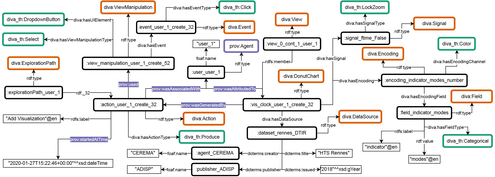

Ontology
The reference documentation of the DIVA ontology: classes, properties, individuals and an interactive diagram.
Browse the ontology →Thesaurus
The SKOS controlled vocabularies for visualization and interaction concepts, as explorable trees.
Browse the thesaurus →Case study
An interactive view of the eSTIMe case study, built on SPARQL competency questions over the DIVA knowledge graph.
Open the visualization →Overview
DIVA provides an ontology and a thesaurus to:
- Model user interactions with visualization tools
- Capture exploration paths and patterns
- Enable semantic analysis of visual analytics processes
- Support reuse and comparison of analysis strategies
The DIVA namespace is http://ns.inria.fr/diva/
Case study: the eSTIMe visualization system
To demonstrate the usage of the DIVA ontology, we lifted system logs describing analytical provenance information from the eSTIMe visualization system, a multi-screen visualization platform designed for exploring urban mobility data.
The logs describe the exploration processes of six users, varying from 31 to 207 steps (i.e., performed actions within the visualization). Each log entry includes metadata such as timestamp, action type, target, view context, and descriptors of the resulting artifacts (e.g., visualizations or datasets). The structured JSON data was transformed into an RDF knowledge graph with the rdflib library in Python.
A set of competency questions were implemented through SPARQL queries and interactive visualization tools, supporting visual exploration of analytical provenance information.

The interactive visualization (open it here) is built from case-study/vis; the SPARQL results are retrieved beforehand using the Corese engine.
Publications
Aline Menin, Catherine Faron. DIVA: An Ontology-based Approach to Model User Activity within Visualization Systems. SAC 2026 - 41st ACM/SIGAPP Symposium on Applied Computing, Mar 2026, Thessaloniki, Greece. (10.1145/3748522.3779893) (hal-05403198v1)
@inproceedings{menin2026diva,
TITLE = {{DIVA: An Ontology-based Approach to Model User Activity within Visualization Systems}},
AUTHOR = {Menin, Aline and Faron, Catherine},
BOOKTITLE = {{SAC 2026 - 41st ACM/SIGAPP Symposium on Applied Computing}},
ADDRESS = {Thessaloniki, Greece},
YEAR = {2026},
MONTH = Mar,
DOI = {10.1145/3748522.3779893}
}